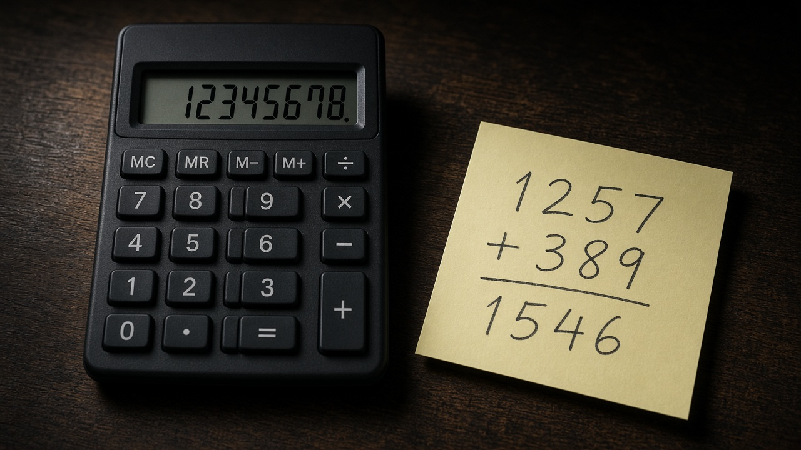
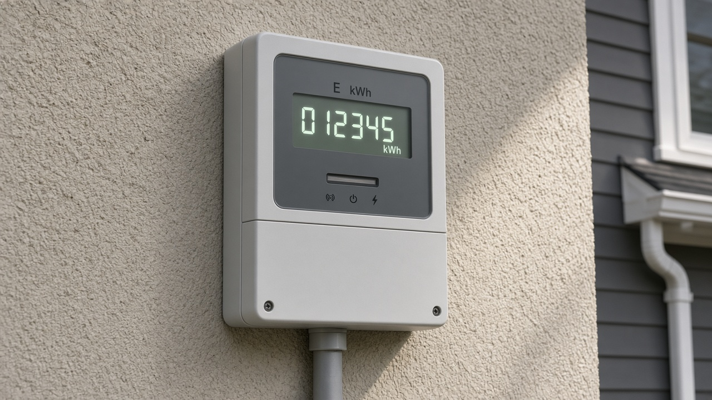
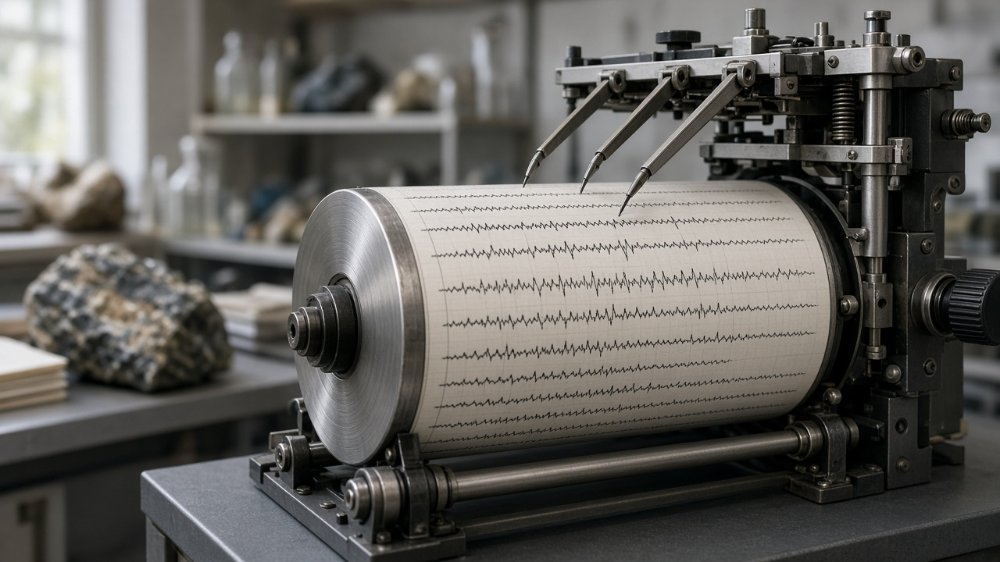
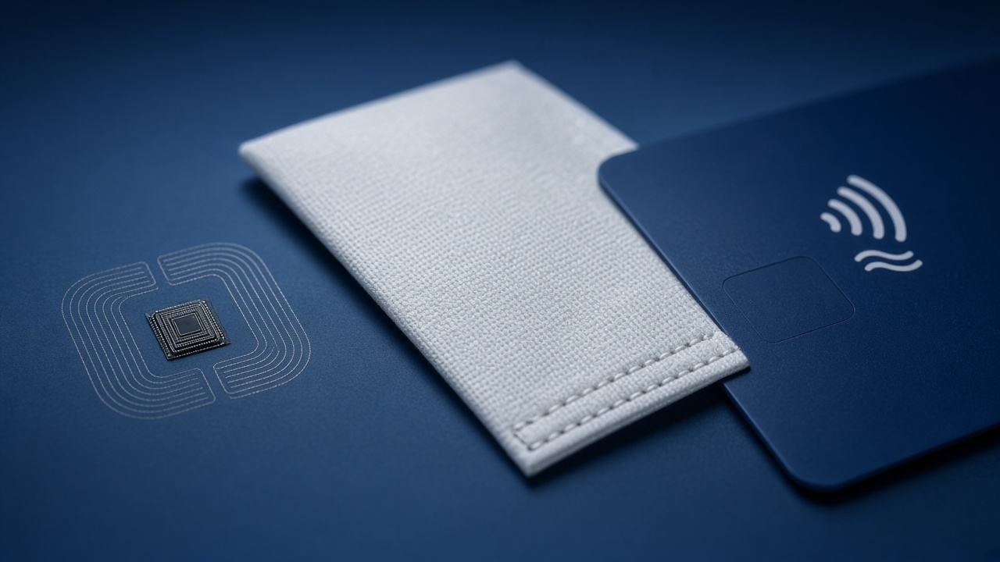

01
المعالجة اليدوية
إنسان يجمع البيانات أو يدخلها: ورقة، هاتف، صندوق بيع، تصحيح اختبار.
موضوعان يحدّدان كيف تدخل البيانات إلى النظام: بيد الإنسان، أو بجهاز يعمل وحده تقريبًا.
إنسان يجمع البيانات أو يدخلها: ورقة، هاتف، صندوق بيع، تصحيح اختبار.
حاسوب أو حسّاس يجمع ويعالج بقليل من التدخل: عدّاد ذكي، صراف، قمر صناعي.
ما يخرج من الحاسوب لا يكون أجود مما يدخل إليه.
الحاسوب يقرأ بالتعرف الضوئي على الأحرف، ويكتب عبر أجهزة الإخراج. وبعض ما يظهر على الشاشة «يُنشأ» داخل الجهاز… لكن بواسطة برنامج كتبه إنسان.
الاسم المختصر: GIGO — Garbage In, Garbage Out.
الآلة الحاسبة شكل بسيط من الحاسوب. تحسب ما تضعه فيها حسابًا صحيحًا، لكنها لن تسأل: هل هذا الرقم هو الرقم الصحيح أصلًا؟
المطلوب: 48 + 27. إذا كتب أحدهم 48 + 72 فستظهر 120. الحساب صحيح… والمسألة خاطئة.

الحاسوب لا يملك قدرة على اتخاذ القرار ما لم تُبرمج فيه. يفعل بالضبط ما يُطلب منه. رغم ذلك، صعب تخيّل الحياة اليوم من دونه: يعالج كميات هائلة بسرعة لا يصل إليها الإنسان.
التعرف الضوئي على الأحرف يحوّل صورة النص إلى بيانات.
الشاشة، الطابعة، الصوت، والحركة: كلها إخراج من البرنامج.
السرعة هائلة. الفهم والحكم يبقيان عند من كتب الأوامر.
إنسان يجمع البيانات أو يدخلها أو يعالجها. الحاسوب أداة بين يديه.
جمع أو معالجة يقوم بها الحاسوب، وأحيانًا بتدخل بشري قليل جدًا.
كل مثال هنا فيه إنسان في منتصف الطريق: يقرأ، يكتب، يمرّر، أو يحكم.
عشرة طلبات في اليوم أرخص بورقة وموظف من بناء نظام كامل.
تصحيح تعبير، حالة زبون خاصة، استثناء لا تغطيه القواعد.
البيانات ما زالت على ورق أو تأتي بمكالمة. أول خطوة إدخال يدوي.
إذا تكررت العملية قليلًا، الجهاز الغالي يصبح خسارة لا حلًا.
المعالجة الآلية: جمع بيانات أو معالجتها يقوم بها الحاسوب، أحيانًا بتدخل بشري قليل جدًا.

عدّاد ذكي
مقياس زلازل
تقنية تحديد الهوية بموجات الراديو. شريحة صغيرة تُقرأ عن بُعد عند مرورها قرب قارئ، بلا لمس وبلا إدخال يدوي.
شريحة على صدر العدّاء. البوابة تسجّل الزمن لحظة العبور.
الجهاز يقرأ ويعالج آلاف العابرين بسرعة لا يصل إليها حكم بساعة يد.
معاملات بنك، قراءات عدّادات، إشارات فضاء. الإنسان يتأخر ويتعب.
إذا تكررت بنفس الطريقة كل يوم، الأتمتة أرخص وأدق على المدى الطويل.
الزلازل والطقس والعدّادات لا تنتظر دوام الموظف.
مدار الأرض، مرصد جبلي، منجم بيانات. الجهاز يذهب ونحن نبقى.
يدوية. حتى لو استخدم حاسوبًا للكتابة: هو من يقرأ الورقة، يسمع الزبون، أو يحكم على الإجابة.
آلية. حتى لو وقف إنسان بجانبه: العدّاد، الصراف، الشريحة، والقمر يعملون بقليل من التدخل.
لكنها مرنة عند الاستثناءات.
لكنها تطبق الخطأ بنفس السرعة إن كانت المدخلات أو البرمجة غلط.
إدخال يدوي للحالات الخاصة، وجمع آلي للكمية الكبيرة.
16 صورة. اختر النوع، ثم اقرأ لماذا. لا تخمّن من شكل الجهاز فقط: انظر من الذي يعالج البيانات.
نختار اليدوية عند الحكم البشري، والقلة، والاستثناء. نختار الآلية عند الحجم، والتكرار، والبعد، والعمل المتواصل.
إنسان = يدوية · جهاز بقليل تدخل = آلية · وجود كمبيوتر لا يكفي وحده